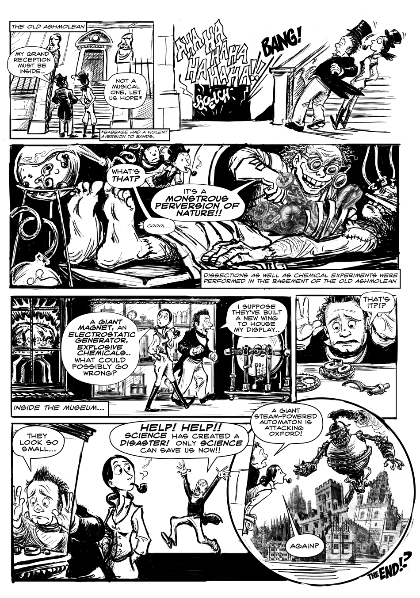

Алгоритм для несуществующей машины
После вычисления значения B7 аналитический механизм либо сохраняет результат в памяти, либо распечатывает его с помощью специального устройства вывода, например, принтера или графопостроителя, при этом конечный результат механически переносится с мельницы на устройство вывода.
Каждый этап процесса выполнялся механически точно, с использованием сложных механизмов, таких как шестеренки, рычаги и другие компоненты для выполнения арифметических операций. Перфокарты диктовали последовательность операций, позволяя аналитическому двигателю выполнять вычисления систематически и шаг за шагом, демонстрируя прозорливость Ады Лавлейс и Чарльза Бэббиджа.
Сама аналитическая машина никогда не была построена, поэтому, по сути, Ада создавала виртуальный алгоритм для несуществующей машины, как отмечает исследователь Сидни Падула. На ее канале можно посмотреть 13-минутное видео с визуализацией работы машины.
Также Падула создала комикс «Захватывающие приключения Лавлейс и Бэббиджа».
По сюжету комикса ученые оказываются в альтернативной вселенной, где успешно создали Аналитическую машину и используют ее для борьбы с преступностью.
